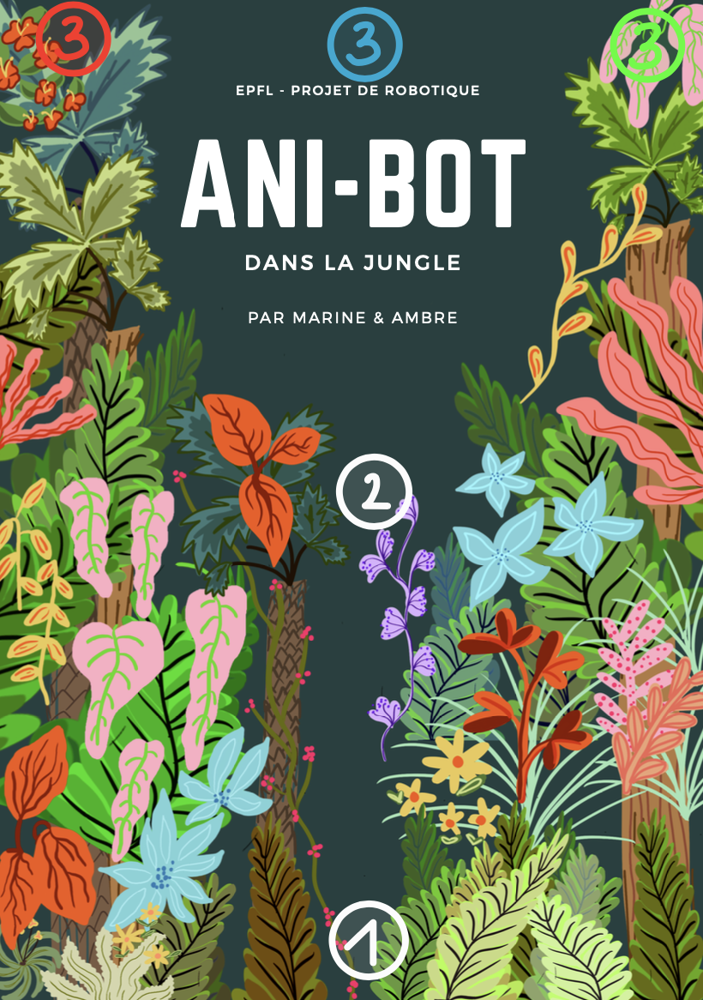

Harvard – Biomedical Robotics Project
I conducted my Master’s thesis at Harvard University, focusing on the application of robotics, control, and machine learning to biomedical and rehabilitation-related problems. The work explored how advanced computational methods can be leveraged to improve the performance, adaptability, and reliability of robotic systems interacting with humans in medical contexts.
The project combined deep learning, control theory, and biomechanical modeling to address challenges related to human–robot interaction and rehabilitation technologies. Emphasis was placed on translating algorithmic insights into robust system-level solutions, taking into account real-world constraints such as safety, variability across users, and clinical applicability.
This thesis experience strengthened my ability to conduct independent research at the interface of robotics, AI, and healthcare, while working in an international research environment. It further reinforced my interest in developing intelligent robotic systems for rehabilitation and assistive technologies, bridging fundamental research with real-world impact
Harvard University
LEM Surgical
During my Operations Internship at LEM Surgical, I contributed to the development and deployment of robotic technologies for computer-assisted orthopedic surgery. LEM Surgical specializes in robotic navigation systems that improve surgical precision, workflow efficiency, and patient outcomes in complex orthopedic procedures.
My role involved working at the intersection of robotics, computer vision, and clinical operations, supporting the integration of AI-driven perception and navigation pipelines into real surgical environments. I collaborated closely with engineers and clinical stakeholders to analyze system performance, support validation workflows, and contribute to the operational readiness of robotic solutions in a medical context.
This experience strengthened my understanding of medical device constraints, including safety, robustness, and usability, while providing hands-on exposure to the translation of robotic research into real-world clinical applications. The internship reinforced my interest in biomedical robotics and rehabilitation technologies, particularly in systems where precision, reliability, and human-robot interaction are critical.
Company Website
Lucid Dreaming Project
This project explores the design of a wearable multimodal neural interface aimed at facilitating trauma recovery through lucid dreaming. The proposed system combines real-time sleep monitoring and targeted neuromodulation to safely induce lucid dreams while preserving sleep quality.
The device integrates ear-EEG for REM sleep detection, transcutaneous auricular vagus nerve stimulation (taVNS) to promote sleep quality and stability, and transcranial direct current stimulation (tDCS) applied to the dorsolateral prefrontal cortex to induce dream lucidity. By leveraging a closed-loop architecture, stimulation is delivered only at optimal moments during REM sleep, reducing disruption and improving effectiveness.
A key contribution of this work lies in the multimodal and configurable design of the system, which unifies sensing, stimulation, and control in a single wearable device optimized for comfort and at-home use. The project also includes a full electronic system architecture, power analysis, signal processing pipeline, and feasibility assessment, highlighting both the therapeutic potential of lucid dreaming and the engineering challenges involved in translating such neurotechnologies into safe, user-centered medical devices.
Report
IMOS
This project focuses on unsupervised object discovery and dynamics prediction from visual data, a key challenge for autonomous robotic systems operating in complex environments. The work investigates object-centric learning approaches that enable models to decompose scenes into individual objects and predict their future motion without relying on labeled data.
Building on Slot Attention and SlotFormer architectures, the project explores the limitations of standard slot-based decomposition, particularly object entanglement and poor generalization. To address these issues, an Invariant Slot Attention mechanism was implemented and integrated, introducing robustness to transformations such as translation and scaling.
In addition, a modified loss function was proposed to encourage better object separation by penalizing feature entanglement and spatial ambiguity. Extensive qualitative and quantitative evaluations on datasets such as OBJ3D and CLEVRER demonstrate improved object decomposition, clearer background separation, and more stable representations.
This work highlights how improved unsupervised scene understanding can enhance object-centric world models, with strong relevance for robotics applications such as perception, planning, and autonomous decision-making.
Report
Code
Controller implementation for stair ascent and descent on an exoskeleton
As a semester project, I worked with BIOROB and Rehassist's lab at EPFL. This work presents the implementation of a 3D path control for stair ascent and descent scenarios using Autonomyo exoskeleton, designed to assist individuals with lower limb disabilities. The work is about the hardware setup, data preprocessing steps, and the application of mapping and finite state machine (FSM) approaches to manage transitions between different gait phases, ensuring accurate and reliable assistance. The results demonstrate the effectiveness of the proposed method. Graded 5.75/6, this is considered a very good result.
Autonomyo website
Report
For our class on Image Analysis and Pattern Recognition, we undertook a coin retrieval project that involved analyzing images containing coins from Euro and CHF currencies. The objective was to recognize and label each coin accurately. Our system demonstrated robustness to outliers, ensuring reliable performance across various conditions.
To achieve this, we implemented several advanced computer vision techniques. Initially, we used Hough Circle Transform and edge detection methods to segment the coins in the images. Following the segmentation, we employed a self-trained Convolutional Neural Network (CNN) to accurately identify and classify each coin.
The integration of these methods allowed for precise detection and labeling, showcasing the effectiveness of combining classical image processing techniques with modern deep learning approaches. Our project was evaluated and received a commendable grade of 5.50 out of 6.
Presentation
Code
Coin retrival project
EPIDEMIC: Effective Planning and Interactive Disease Environment for Managing Infectious Containment
For the Reinforcement Learning class, we collaborated with Professor Marcel Salathé's lab, Salathé Lab, focusing on digital epidemiology. Our project aimed to develop a reinforcement learning technique capable of containing an infection's spread. The task involved designing an agent that could navigate a grid and strategically decide when and where to vaccinate to effectively halt the infection.
We created the environment and experimented with various algorithms, including Proximal Policy Optimization (PPO), REINFORCE, and Deep Q-Networks (DQN), to identify if an effective containment strategy could emerge. Our efforts were successful as we managed to contain the infection by forming a circular barrier around the infected cell under specific conditions.
This project demonstrated our ability to apply reinforcement learning to real-world problems in epidemiology, resulting in a final grade of 5.50 out of 6.
Code
Report
Poster
For our Mechanical Engineering Product Design and Development class (ME410) at EPFL during the fall of 2023, we had the freedom to design a wearable robotic object. We chose to create an innovative self-inflating soft robotic sole named "Sally." Sally is designed to provide a personalized foot massage experience with adjustable pressure settings to ensure optimal comfort.
This project involved designing a pneumatically driven sole capable of delivering foot massages by using a proportional control algorithm to regulate user-chosen internal pressure. Our report elaborates on the various design choices we made and discusses the engineering specifications we aimed to meet. It also outlines which specifications were fully met and which were only partially achieved.
Our efforts culminated in a successful project that demonstrated our ability to integrate mechanical design and control systems to create a functional and user-friendly product. The project was well-received, earning us a grade of 5.5 out of 6.
Report
Website
Poster
Computational study of the movement of a zebrafish
In our project for the Computational Motor Control course, we developed and analyzed a neuromechanical model of zebrafish swimming. The primary objective was to implement a firing rate controller to simulate zebrafish locomotion and investigate the impact of sensory feedback. By varying the descending input drive and differential drive parameters, we examined the resulting swimming behaviors and turning performance. Our findings highlighted the crucial role of sensory feedback in stabilizing movement and mitigating the effects of noise. The project successfully demonstrated how computational models can be used to gain insights into biological motor control systems, providing a foundation for future research in both computational neuroscience and bio-inspired robotics. Graded 6/6 for the first part, i got 5.5/6 on the final grade, which included also an exam.
code
Report 1
Report 2
EPFL food festival
For our Managing organisation class, the only non technical class that we have, we organized a big food festival on campus. During my time on the project, I was a key member of the communication team. Our primary tasks involved establishing an Instagram account and a website, and creating various promotional materials including event advertisements, menus, and information about sponsors and contests. We used Canva Pro to design these materials and distributed printed posters and flyers across the campus. My role was pivotal during the event as I was present daily, assisting with setup and teardown, and preparing food items like focaccias and cookies. I also managed continuous updates on Instagram, ensuring real-time event coverage and engagement. Our efforts resulted in significant success, with over 360 followers, 13 posts, 22 stories, and a video recap viewed by over 3000 people, culminating in a sold-out event and high attendance. Through this project, I honed my skills in social media management, content creation, project coordination, and team collaboration, all of which will be invaluable in my future endeavors. I got 6/6 for both semesters.
Website
instagram page
Mobile robotics
During the early stages of my master's studies, I had the opportunity to delve deeply into the field of mobile robotics. The core challenge of this project was to program a mobile robot to autonomously navigate from point A to point B while avoiding obstacles in real-time. The robot's navigation relied heavily on computer vision techniques to process real-time camera feedback. This allowed the robot to detect its start and stop points, as well as identify obstacles in its path. The central task was to ensure that the robot chose the shortest and most optimal path, balancing efficiency and safety.
To achieve this, the project integrated several advanced techniques, including optimal pathfinding algorithms and Bayesian methods, such as the Kalman filter, which were employed to predict and correct the robot's movement trajectory. These tools facilitated both global path planning and local obstacle avoidance, ensuring that the robot could smoothly and efficiently reach its destination even in a dynamic and unpredictable environment. This project was a comprehensive exercise in applying theoretical concepts to a real-world scenario, merging computer vision, robotics, and control systems into a cohesive and functional system.
I got a 4/6.
Report
Embedded systems and robotics

In this project, the E-puck2 robot was programmed to autonomously navigate a jungle-themed environment, simulating a rescue mission where it locates, identifies, and transports objects representing baby animals to their corresponding "mother" animals based on color. The robot uses a combination of stepper motors for movement, an IR distance sensor for detecting objects, and a camera for color recognition.
The operation begins with the robot detecting an object, determining its color, and then moving it to a predefined location associated with that color. This process repeats until the robot is manually turned off. The implementation involved a complex system of threads and semaphores to manage the robot's tasks efficiently. We encountered significant challenges, particularly with ensuring accurate color detection under varying lighting conditions and managing the robot's limited memory resources, which required careful optimization and adjustments to the code. Despite these challenges, the project was successfully executed, offering us a valuable hands-on experience in applying embedded systems and robotics concepts to a real-world scenario. We got 5.1/6 in this project.
Report
Logical systems
This project involved the design and implementation of a digital watch as part of a final semester project. The watch features standard functionalities like time display and an alarm, alongside more advanced features such as a stopwatch, multiple time zones, and LED animations. The watch is operated using two push buttons, two dip switches, a buzzer, a 4x4 keypad, and six 7-segment displays. Users can set the time, select different time zones, and configure the alarm through a combination of button presses and keypad inputs. The system's architecture is built around a central finite state machine (FSM) that manages these functions, using multiplexers and demultiplexers to control inputs and outputs specific to each module. The project encountered challenges, particularly with keypad integration and frequency management, which were resolved by optimizing the clock frequency and using registers for memory. The project successfully implemented the desired functionalities, offering practical experience in logical systems design and digital electronics. We got 5.5/6.
Mechanical conception
The project described involves the design of an innovative oscillating mechanism for a travel clock, called "Balanced-Isospring." This mechanism features a two-degree-of-freedom isotropic oscillator that is resistant to linear and angular accelerations, ensuring accuracy regardless of the clock's orientation or movement. The design focuses on achieving force and moment balance, which allows the clock to maintain precise timekeeping even when subjected to motion. The report details the principles of operation, the architecture of the mechanism, material selection, construction choices, and a critical analysis of the project outcomes. We got 5/6.
Report
My design
C++ projet, planet Donut
The "Planet Donut" project in C++ involves simulating a system of robots tasked with resource extraction on a planet, employing a series of specialized algorithms. These include managing connections between robots, resetting their travel data, and strategically deploying different types of robots—prospection, drilling, transport, and communication—each with specific roles like identifying resource deposits, extracting resources, and maintaining a communication grid. The strategy emphasizes comprehensive planetary coverage to maximize resource extraction efficiency while ensuring that the robots operate effectively within set parameters. Despite encountering challenges such as segmentation faults, the project was successfully executed through careful coordination and teamwork. We got a 5.25/6
Report
Skills
Robotics & Control · control systems · dynamics · human–robot interaction · rehabilitation robotics
Machine Learning & Perception · deep learning · computer vision · object-centric learning · reinforcement learning
Biomedical Engineering · biomedical signal processing · neurotechnology · wearable systems
Programming & Tools · Python · C++ · MATLAB · PyTorch · ROS · Git · SolidWorks